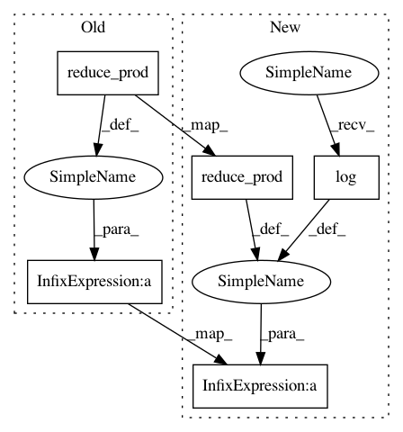

519d0c4fb8a337da86861fe46135d58085e88b89,gpflow/transforms.py,Rescale,tf_log_jacobian,#Rescale#,245
Before Change
return self.chain_transform.backward(y) / self.factor
def tf_log_jacobian(self, x):
return tf.cast(tf.reduce_prod(tf.shape(x)), float_type) * \
self.factor * self.chain_transform.tf_log_jacobian(x * self.factor)
def __str__(self):
return "R" + self.chain_transform.__str__()
After Change
return self.chain_transform.backward(y) / self.factor
def tf_log_jacobian(self, x):
N = tf.reduce_prod(tf.shape(x))
return tf.cast(N, float_type) * tf.log(tf.cast(self.factor, float_type)) + \
self.chain_transform.tf_log_jacobian(x * self.factor)
def __str__(self):
return "R" + self.chain_transform.__str__()
In pattern: SUPERPATTERN
Frequency: 3
Non-data size: 5
Instances
Project Name: GPflow/GPflow
Commit Name: 519d0c4fb8a337da86861fe46135d58085e88b89
Time: 2017-11-06
Author: st--@users.noreply.github.com
File Name: gpflow/transforms.py
Class Name: Rescale
Method Name: tf_log_jacobian
Project Name: GPflow/GPflow
Commit Name: 07de260e3e8f33283a5253ddd2b7662bef6d2b1c
Time: 2017-11-06
Author: st@prowler.io
File Name: gpflow/transforms.py
Class Name: Rescale
Method Name: log_jacobian_tensor
Project Name: GPflow/GPflow
Commit Name: d44a846b9a2430b3de2f070e5ba70faca4d677cc
Time: 2017-11-06
Author: st@prowler.io
File Name: gpflow/transforms.py
Class Name: Rescale
Method Name: tf_log_jacobian